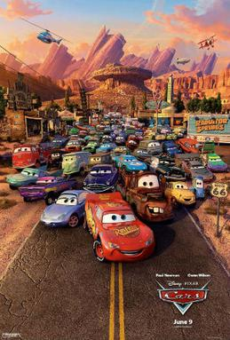
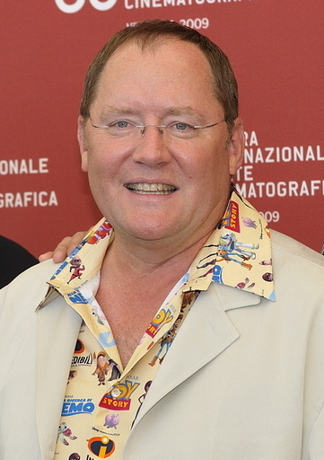

From Wikipedia, the free encyclopedia
This article is about the 2006 Pixar film. For the franchise that started with this film, see Cars (franchise). Cars is a 2006 American animated sports comedy film produced by Pixar Animation Studios for Walt Disney Pictures . The film was directed by John Lasseter , co-directed by Joe Ranft (his only directorial effort), produced by Darla K. Anderson, and written by Lasseter, Ranft, Dan Fogelman , Kiel Murray, Phil Lorin, and Jorgen Klubien based on a story by Lasseter, Ranft, and Klubien. The film stars an ensemble voice cast of Owen Wilson, Paul Newman (in his final voice acting theatrical film role), Bonnie Hunt, Larry the Cable Guy, Tony Shalhoub, Cheech Marin, Michael Wallis, George Carlin, Paul Dooley, Jenifer Lewis , Guido Quaroni, Michael Keaton, Katherine Helmond, John Ratzenberger and Richard Petty , while race car drivers Dale Earnhardt Jr. (as "Junior"), Mario Andretti, Michael Schumacher and car enthusiast Jay Leno (as "Jay Limo") voice themselves.
Set in a world populated entirely by anthropomorphic vehicles , the film follows a young self-obsessed racecar named Lightning McQueen who, on the way to the most important race of his life, becomes stranded in a forgotten town along U.S. Route 66 called Radiator Springs , where he learns about friendship and begins to reevaluate his priorities.
In a world populated by anthropomorphic vehicles, the Dinoco 400 race is the last of the Piston Cup season. The event intensifies a rivalry between the retiring seven-time champion, Strip "The King" Weathers, the cunning Chick Hicks, and the talented but overconfident rookie, Lightning McQueen , who are all tied for the most points. Desperate to win and leave the unglamorous sponsorship of Rust-eze for the prestigious Dinoco, Lightning struggles with teamwork due to his self-centered attitude. During the race, Lightning refuses to take new tires, causing his rear tires to blow out before he can win. The race ends in a three-way tie between the leaders, setting the stage for a decisive race at the Los Angeles International Speedway in one week.
The development of Cars began in 1998, when Pixar finished production of A Bug's Life. At that time, Jorgen Klubien began writing a new script called The Yellow Car, which was about an electric car living in a gas-guzzling world inspired by The Ugly Duckling, an idea triggered by the poor reception his fellow countrymen gave the Mini-El car .[10] Some of the original drawings and characters were developed in 1998 and the producers agreed that Cars could be the next Pixar film after A Bug's Life and be released in early 1999, particularly around June 4.[10] However, the idea was scrapped in favor of Toy Story 2.[10] Later, production resumed with major script changes, like giving Mater, Doc and a few other characters bigger parts.[10]
John Lasseter said that inspiration for the film's story came after he took a cross-country road trip with his wife and five sons in 2000.[11] When he returned to the studio after vacation, he contacted Michael Wallis, a Route 66 historian. Wallis then led eleven Pixar animators in rented white Cadillacs on two different road trips across the route to research the film.[12][13][14] In 2001, the film's working title was Route 66 (after U.S. Route 66), but the title was changed to Cars in order to avoid confusion with the 1960s television series of the same name.[15] In addition, Lightning McQueen's racing number was originally going to be 57 (a reference to 1957, Lasseter's birth year), but was changed to 95 (a reference to 1995, the year Pixar's first feature film Toy Story was released).[15]
For the cars themselves, Lasseter also visited the design studios of the Big Three Detroit automakers, particularly J Mays of Ford Motor Company.[11] Lasseter learned how real cars were designed.[11]
In 2006, Lasseter spoke about how they worked hard to make the animation believable, saying: "It took many months of trial and error, and practicing test animation, to figure out how each car moves and how their world works. Our supervising animators, Doug Sweetland and Scott Clark, and the directing animators, Bobby Podesta and James Ford Murphy, did an amazing job working with the animation team to determine the unique movements for each character based on its age and the type of car it was. Some cars are like sports cars and they're much tighter in their suspension. Others are older '50s cars that are a lot looser and have more bounce to them. We wanted to get that authenticity in there but also to make sure each car had a unique personality. We also wanted each animator to be able to put some of themself in the character and give it their own spin. Every day in dailies, it was so much fun because we would see things that we had never seen in our lives. The world of cars came alive in a believable and unexpected way."[11]